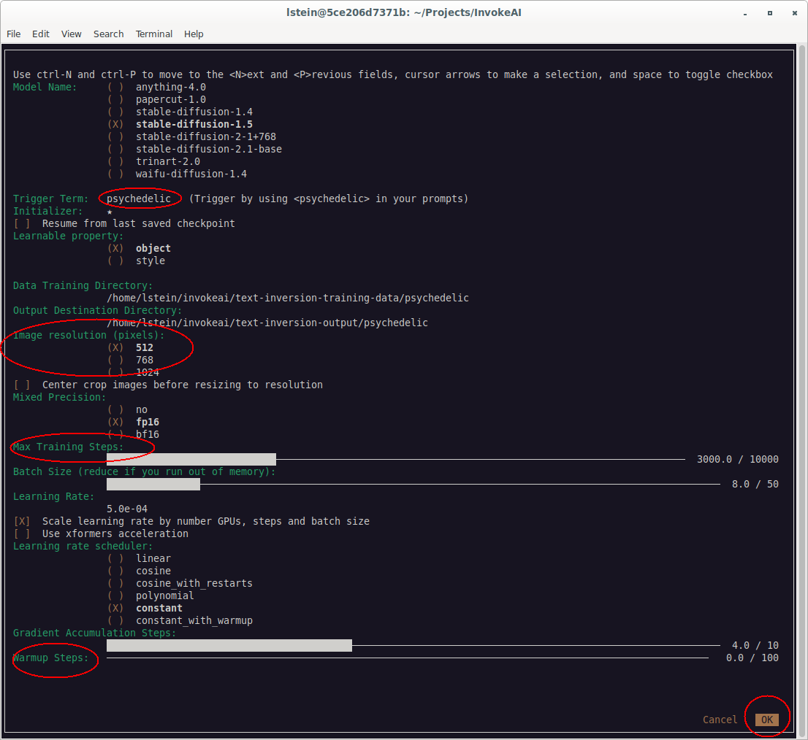

Training#
Textual Inversion Training#
Personalizing Text-to-Image Generation#
You may personalize the generated images to provide your own styles or objects by training a new LDM checkpoint and introducing a new vocabulary to the fixed model as a (.pt) embeddings file. Alternatively, you may use or train HuggingFace Concepts embeddings files (.bin) from https://huggingface.co/sd-concepts-library and its associated notebooks.
Hardware and Software Requirements#
You will need a GPU to perform training in a reasonable length of
time, and at least 12 GB of VRAM. We recommend using the xformers
library to accelerate the
training process further. During training, about ~8 GB is temporarily
needed in order to store intermediate models, checkpoints and logs.
Preparing for Training#
To train, prepare a folder that contains 3-5 images that illustrate the object or concept. It is good to provide a variety of examples or poses to avoid overtraining the system. Format these images as PNG (preferred) or JPG. You do not need to resize or crop the images in advance, but for more control you may wish to do so.
Place the training images in a directory on the machine InvokeAI runs
on. We recommend placing them in a subdirectory of the
text-inversion-training-data folder located in the InvokeAI root
directory, ordinarily ~/invokeai (Linux/Mac), or
C:\Users\your_name\invokeai (Windows). For example, to create an
embedding for the "psychedelic" style, you'd place the training images
into the directory
~invokeai/text-inversion-training-data/psychedelic.
Launching Training Using the Console Front End#
InvokeAI 2.3 and higher comes with a text console-based training front
end. From within the invoke.sh/invoke.bat Invoke launcher script,
start training tool selecting choice (3):
1 "Generate images with a browser-based interface"
2 "Explore InvokeAI nodes using a command-line interface"
3 "Textual inversion training"
4 "Merge models (diffusers type only)"
5 "Download and install models"
6 "Change InvokeAI startup options"
7 "Re-run the configure script to fix a broken install or to complete a major upgrade"
8 "Open the developer console"
9 "Update InvokeAI"
Alternatively, you can select option (8) or from the command line, with the InvokeAI virtual environment active,
you can then launch the front end with the command invokeai-ti --gui.
This will launch a text-based front end that will look like this:

The interface is keyboard-based. Move from field to field using
control-N (^N) to move to the next field and control-P (^P) to the
previous one.
The number of parameters may look intimidating, but in most cases the predefined defaults work fine. The red circled fields in the above illustration are the ones you will adjust most frequently.
Model Name#
This will list all the diffusers models that are currently installed. Select the one you wish to use as the basis for your embedding. Be aware that if you use a SD-1.X-based model for your training, you will only be able to use this embedding with other SD-1.X-based models. Similarly, if you train on SD-2.X, you will only be able to use the embeddings with models based on SD-2.X.
Trigger Term#
This is the prompt term you will use to trigger the embedding. Type a
single word or phrase you wish to use as the trigger, example
"psychedelic" (without angle brackets). Within InvokeAI, you will then
be able to activate the trigger using the syntax <psychedelic>.
Initializer#
This is a single character that is used internally during the training process as a placeholder for the trigger term. It defaults to "*" and can usually be left alone.
Resume from last saved checkpoint#
As training proceeds, textual inversion will write a series of intermediate files that can be used to resume training from where it was left off in the case of an interruption. This checkbox will be automatically selected if you provide a previously used trigger term and at least one checkpoint file is found on disk.
Note that as of 20 January 2023, resume does not seem to be working properly due to an issue with the upstream code.
Data Training Directory#
This is the location of the images to be used for training. When you
select a trigger term like "my-trigger", the frontend will prepopulate
this field with ~/invokeai/text-inversion-training-data/my-trigger,
but you can change the path to wherever you want.
Output Destination Directory#
This is the location of the logs, checkpoint files, and embedding
files created during training. When you select a trigger term like
"my-trigger", the frontend will prepopulate this field with
~/invokeai/text-inversion-output/my-trigger, but you can change the
path to wherever you want.
Image resolution#
The images in the training directory will be automatically scaled to the value you use here. For best results, you will want to use the same default resolution of the underlying model (512 pixels for SD-1.5, 768 for the larger version of SD-2.1).
Center crop images#
If this is selected, your images will be center cropped to make them square before resizing them to the desired resolution. Center cropping can indiscriminately cut off the top of subjects' heads for portrait aspect images, so if you have images like this, you may wish to use a photoeditor to manually crop them to a square aspect ratio.
Mixed precision#
Select the floating point precision for the embedding. "no" will result in a full 32-bit precision, "fp16" will provide 16-bit precision, and "bf16" will provide mixed precision (only available when XFormers is used).
Max training steps#
How many steps the training will take before the model converges. Most training sets will converge with 2000-3000 steps.
Batch size#
This adjusts how many training images are processed simultaneously in each step. Higher values will cause the training process to run more quickly, but use more memory. The default size will run with GPUs with as little as 12 GB.
Learning rate#
The rate at which the system adjusts its internal weights during training. Higher values risk overtraining (getting the same image each time), and lower values will take more steps to train a good model. The default of 0.0005 is conservative; you may wish to increase it to 0.005 to speed up training.
Scale learning rate by number of GPUs, steps and batch size#
If this is selected (the default) the system will adjust the provided learning rate to improve performance.
Use xformers acceleration#
This will activate XFormers memory-efficient attention. You need to have XFormers installed for this to have an effect.
Learning rate scheduler#
This adjusts how the learning rate changes over the course of training. The default "constant" means to use a constant learning rate for the entire training session. The other values scale the learning rate according to various formulas.
Only "constant" is supported by the XFormers library.
Gradient accumulation steps#
This is a parameter that allows you to use bigger batch sizes than your GPU's VRAM would ordinarily accommodate, at the cost of some performance.
Warmup steps#
If "constant_with_warmup" is selected in the learning rate scheduler, then this provides the number of warmup steps. Warmup steps have a very low learning rate, and are one way of preventing early overtraining.
The training run#
Start the training run by advancing to the OK button (bottom right)
and pressing ~/invokeai/text-inversion-output/my-model/)
At the end of successful training, the system will copy the file
learned_embeds.bin into the InvokeAI root directory's embeddings
directory, using a subdirectory named after the trigger token. For
example, if the trigger token was psychedelic, then look for the
embeddings file in
~/invokeai/embeddings/psychedelic/learned_embeds.bin
You may now launch InvokeAI and try out a prompt that uses the trigger
term. For example a plate of banana sushi in <psychedelic> style.
Training with the Command-Line Script#
Training can also be done using a traditional command-line script. It can be launched from within the "developer's console", or from the command line after activating InvokeAI's virtual environment.
It accepts a large number of arguments, which can be summarized by
passing the --help argument:
Typical usage is shown here:
invokeai-ti \
--model=stable-diffusion-1.5 \
--resolution=512 \
--learnable_property=style \
--initializer_token='*' \
--placeholder_token='<psychedelic>' \
--train_data_dir=/home/lstein/invokeai/training-data/psychedelic \
--output_dir=/home/lstein/invokeai/text-inversion-training/psychedelic \
--scale_lr \
--train_batch_size=8 \
--gradient_accumulation_steps=4 \
--max_train_steps=3000 \
--learning_rate=0.0005 \
--resume_from_checkpoint=latest \
--lr_scheduler=constant \
--mixed_precision=fp16 \
--only_save_embeds
Troubleshooting#
Cannot load embedding for <trigger>. It was trained on a model with token dimension 1024, but the current model has token dimension 768#
Messages like this indicate you trained the embedding on a different base model than the currently selected one.
For example, in the error above, the training was done on SD2.1 (768x768) but it was used on SD1.5 (512x512).
Reading#
For more information on textual inversion, please see the following resources:
- The textual inversion repository and associated paper for details and limitations.
- HuggingFace's textual inversion training page
- HuggingFace example script
documentation
(Note that this script is similar to, but not identical, to
textual_inversion, but produces embed files that are completely compatible.
copyright © 2023, Lincoln Stein and the InvokeAI Development Team